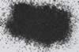

|
|
(For further information on spectroscopy, see:
http://speclab.cr.usgs.gov)
TITLE: Cuprite HS127 DESCRIPT
DOCUMENTATION_FORMAT: MINERAL
SAMPLE_ID: HS127
MINERAL_TYPE: Oxide
MINERAL: Cuprite
FORMULA: Cu2O
FORMULA_HTML: Cu2O
COLLECTION_LOCALITY: Butte, Montana
ORIGINAL_DONOR: Hunt and Salisbury Collection
CURRENT_SAMPLE_LOCATION: USGS Denver Spectroscopy Laboratory
ULTIMATE_SAMPLE_LOCATION: USGS Denver Spectroscopy Laboratory
SAMPLE_DESCRIPTION:
This is a relatively pure cuprite sample (analysis indicate 0.008% by weight Fe). Transition of the cupric ion in the cuprite crystal field results in absorption feature at 0.85µm.
Hunt, G.R., J.W. Salisbury, and C.J. Lenhoff, 1971, Visible and
near-infrared spectra of minerals and rocks: III. Oxides and
hydroxides. Mod. Geol., 2, pp. 195-205.
IMAGE_OF_SAMPLE:

END_SAMPLE_DESCRIPTION.
XRD_ANALYSIS:
40 kV - 30 mA, 6.5-9.5 keV
File: cupr127_mdi (smear mount on quartz plate)
References: JCPDS #41-254, 41-1390; Huebner's reference patterns
Found: cuprite, malachite, minor quartz, unindexed reflection at 3.23 Angstroms
Comment: Cuprite and quartz reflections sharp, indicating good crystallinity. Many malachite reflections could be indexed and compare well with a weak reference pattern of malachite from the SSH collection.
J.S.Huebner, J.Pickrell, T. Schaefer, written communication(1994 USGS)
Also::::
40 kV - 30 mA, 6.5-9.5 keV
File: cupr127.out, *.mdi; cupr127b.out, *.mdi
References: JCPDS #41-254, 41-1390, 4-836, and Huebner's reference patterns
Found: Cuprite >> quartz > malachite, copper (?), unidentified weak reflection at
3.23 Angstroms
Sought but not found: chalcocite, covellite, digenite, chalcopyrite, pyrite,
goethite, hematite, magnetite, brochantite, atacamite, antlerite, azurite
Comment: Strong and sharp cuprite pattern - the material is well crystallized.
All other reflections of moderate to very weak intensity. The quartz
identification is based on the (100) and (101) reflections only. Malachite is
based on five very weak reflections. The copper is based on a weak (111) and
very weak (220). [The copper (111) could be pyrrhotite (10-12), but that would
leave unexplained the reflection at the position of the copper (220).]
END_XRD_ANALYSIS.
COMPOSITIONAL_ANALYSIS_TYPE: None # XRF, EM(WDS), ICP(Trace), WChem
COMPOSITION_TRACE: None
COMPOSITION_DISCUSSION:
END_COMPOSITION_DISCUSSION.
MICROSCOPIC_EXAMINATION:
mode:
77 vol% cuprite
10 vol% quartz
10 vol% azurite-malachite
3 vol% white soft mineral
Red metallic luster is diagnostic of cuprite. G. Swayze.
END_MICROSCOPIC_EXAMINATION.
SPECTROSCOPIC_DISCUSSION:
END_SPECTROSCOPIC_DISCUSSION.
SPECTRAL_PURITY: 1b2c3c4c # 1= 0.2-3, 2= 1.5-6, 3= 6-25, 4= 20-150 microns
| LIB_SPECTRA_HED: | where | Wave Range | Av_Rs_Pwr | Comment |
|---|---|---|---|---|
| LIB_SPECTRA: | splib04a r 1323 | 0.2-3.0µm | 200 | g.s.= 269 µm |
| LIB_SPECTRA: | splib05a r 2296 | 0.2-3.0µm | 200 | g.s.= |
| LIB_SPECTRA: | splib06a r 6639 | g.s.= | ||
| LIB_SPECTRA: | splib06a r 6651 | g.s.= |
{kind=link}